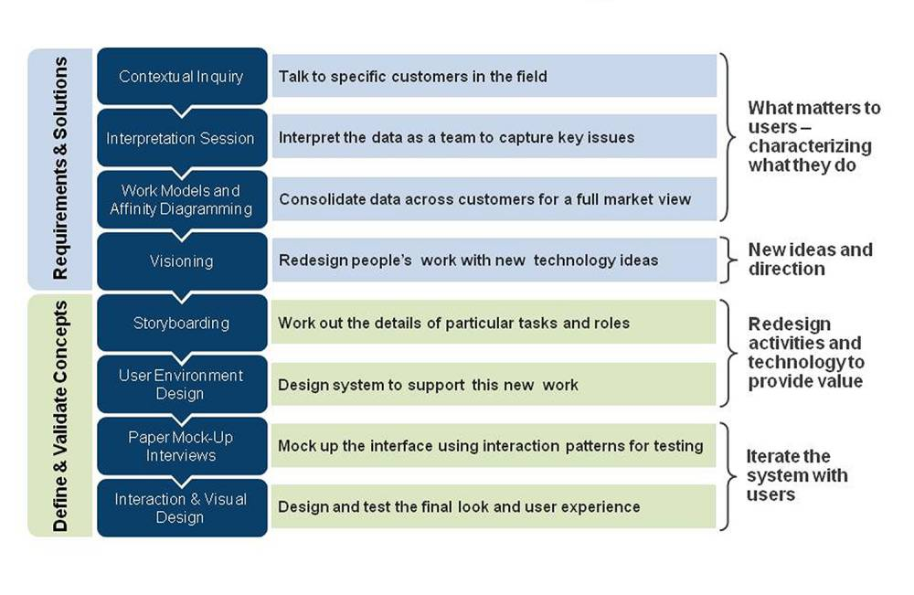

› Process Overview
Contextual Design can be divided into two phases. The first phase is Requirements & Solutions. The second phase is Defining and Validating Concepts as shown in Figure 1 below.
Figure 1: Contextual Design Process (image source)
-
Requirements and Solutions
-
Defining and Validating Concepts
This phase consists also of four main processes: Storyboarding, User Environment Design, Paper Mock-Up Interviews, and Interaction and Visual Design. These processes are discussed in detail in the next following section. This phase aims at developing a final system design after going through a serious of prototyping with users in order to capture all details required to better the system design.
As shown in Figure 1, this phase consists of four main processes: Contextual Inquiry, Interpretation Session, Data Consolidation, and finally Visioning. Each of these processes is discussed in detail in the following section. The main goal in the requirements and solutions phase is to collect field data on users' work practice and develop a concrete understanding of what users truly need in order to design a system that is completely supportive of users’ work practice.